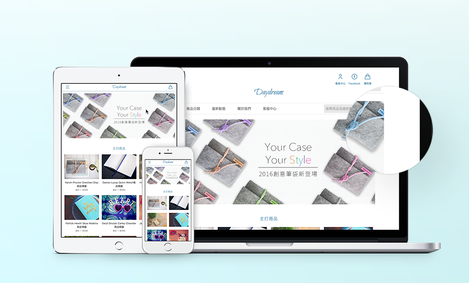
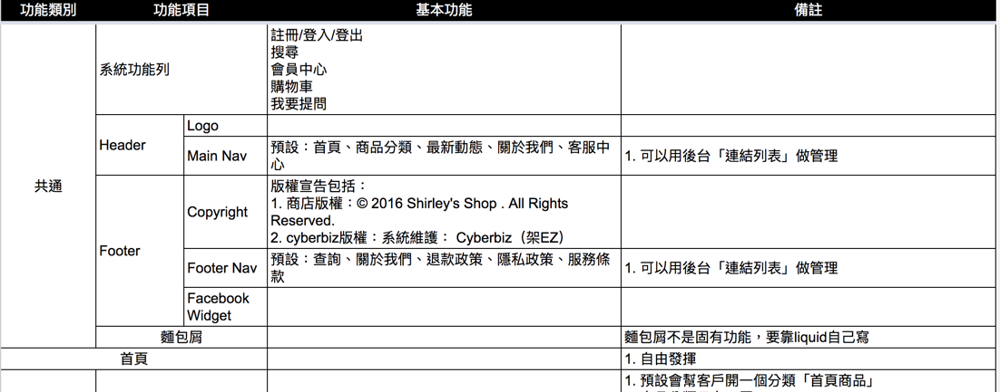
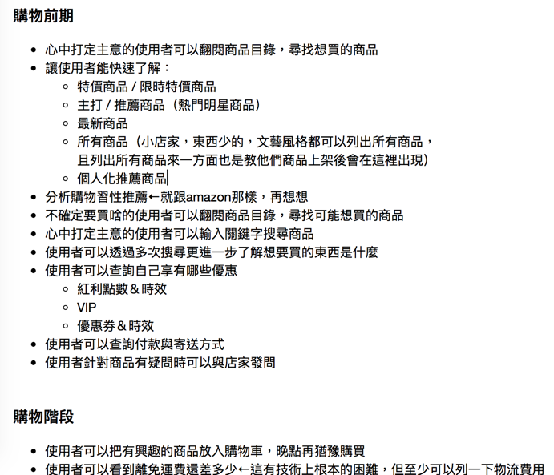
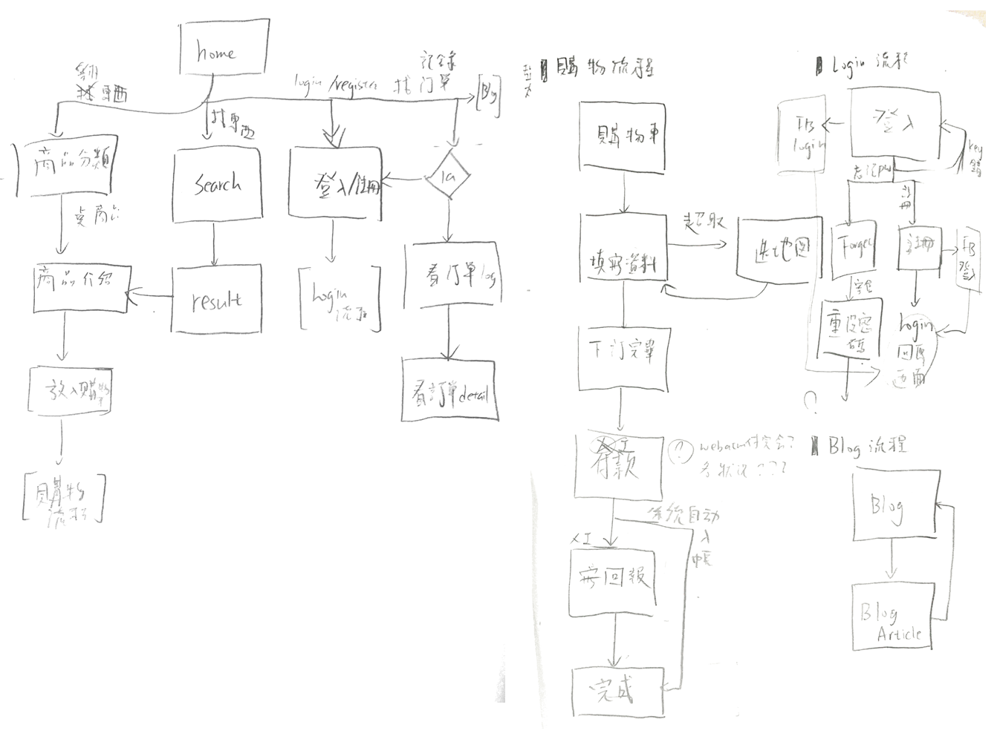
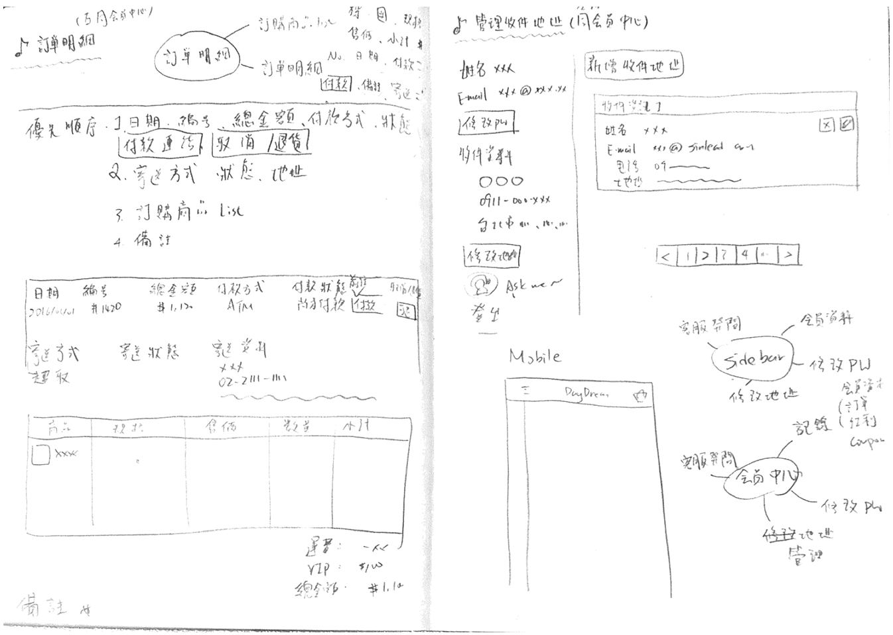
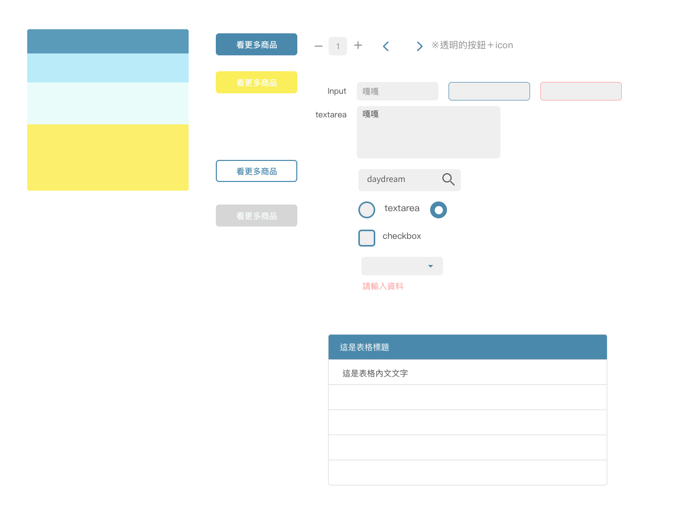
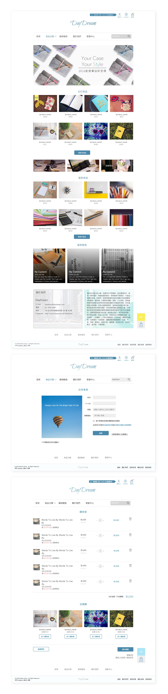

Daydream - Cyberbiz Theme
Cyberbiz 是一個電子商務開店系統，不需要會架站技術，任何人都可以申請自己專屬的商店網站，快速在網路上開店。Cyberbiz 也提供多種網站樣式主題（Theme）供使用者更換，DayDream 就是為專門為 Cyberbiz 商店製作的 Theme，設計目標為提供給販售文創物品、玩具小物相關類型的商店使用。
My Role
- 功能規格制定
- 制定 Theme 的基本功能規格和頁面列表
- 資訊架構設計
- 規劃設計前後台架構與流程
- UI & 視覺設計
- 制定 UI 樣式風格、規劃設計頁面資訊與排版、繪製 Wireframe 與設計 Mockup 樣式稿
- 前端設計與切版
- 負責所有頁面的切版與前端開發 coding
Overview
Specification
在為了要讓團隊內部成員與外部客戶都能夠清楚了解 Theme 的功能，也算是讓後續製作 Theme 有一份開發頁面列表可以參考，因此在我接手設計開發 Theme 後的第一步驟，就是先製作 Theme 的規格。這邊我就自身對於系統的了解，並且多次與工程團隊的請教與討論後，訂出了 Theme 的基本功能規格和頁面列表。
User Story
Cyberbiz 的 Theme 能使用的功能是取決於後端支援的功能與參數，但實際在設計 Theme 時，我會先基於過往累積的使用者需求、問題檢討現有規格，並加上自身對網路購物流程的了解跟設計經驗列出 User Story，作為設計 Concept 的基礎和使用者流程。
Flow & Wireframe Design
上述前置工作完畢後就可以進入 UI 設計流程，我會先依照 User Story 定義出各種使用者在網站上進行的任務 Flow，然後透過製作 Wireframe 來設計各個頁面上的資訊與功能。由於 CyberBiz 所有 Theme 都需要支援 RWD ，因此在在設計 Wireframe 時我會參考規格上的頁面分類，將一些共通的版型的行動版本頁面設計也一併考慮進去。
Style Guide
DayDream 是針對文創物品、玩具小物類型的商店所打造的 Theme 。當時以淡色系與輕柔風格為目標進行視覺風格設計。我在開始設計 UI 視覺稿以前會先制定 UI 基礎元件與主視覺風格，並設計出平面 Style Guide 作為未來整體 UI 風格指南。
UI Design
確立 Style Guide 後，我開始著手設計兩種類型的視覺 Mockup 稿：
- 共通元件的樣式，如：商品列表上的商品縮圖 Module 等
- 主要功能頁面的版型製作視覺 Layout 。考量到時程以及後面前端設計也是由我所負責，所以在這個階段我並不會把所有頁面 Mockup 都畫出來，只會先產出主要功能的頁面設計
一方面是透過設計 Mockup 稿的過程反覆確認與修正設計細節，一方面也是會用此 Mockup 與團對其他人討論，介紹 Theme 各個頁面的設計並請他們提供意見。這階段也會設計頁面上的 Placeholder 用 Banner ，視覺風格也一樣緊扣設計目標。
Front-End Design & Coding
Theme 在 Coding 開發分成兩個階段，第一階段是把頁面設計稿用 HTML 和 CSS 的方式刻出來，第二階段則是將第一階段的頁面加上 Cyberbiz Theme 所使用的 Liquid 語法與參數，製作成可以放在 Cyberbiz 上使用的 Theme，而我負責的是第一階段的部份。
Theme 第一階段其實就像是在開發一個完整的網路商店靜態網站 UI，像這樣由我自己一個人負責的網站 UI 前端開發的話，我都會用我自己改良自 MVCSS 的 Framework 作為基底進行開發，開發流程如下：
- 先寫好網站基本的 Config，如：文字大小、段落行距、主要色系色碼等等
- 評估 Wireframe 等前面設計資料，先抓出全站共通元件如：Header、Footer、Table 等進行 codeing
- 依照規格中的頁面列表開始進行各個頁面的製作。在這階段通常我會先評估各個功能共通的專屬元件後，先在筆記本上做 CSS naming 作業，然後把 HTML 架構寫上去（使用 slim 來寫 HTML）後再開始撰寫功能共通元件 CSS
- 撰寫扣除全站跟功能的共通元件後剩下細項 CSS ，並適當做調整